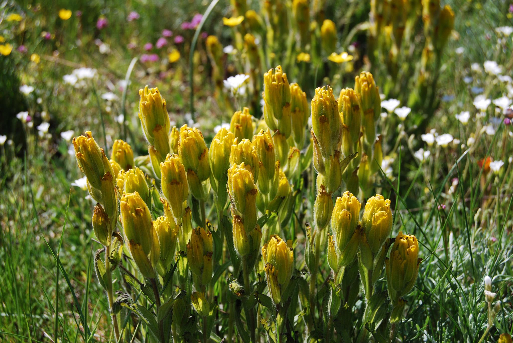
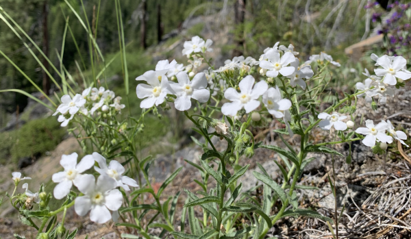
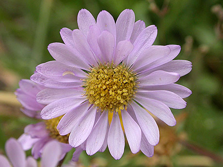

Deforestation and Decline of Nature
The Pacific Northwest is known for its vast forests and diverse plant species. Although with increasing deforestation and wildfires, many plant species have become endangered and are currently facing extinction. The loss of plant species is just as pressing a concern as endangered animal species, as plants serve as food sources for humans and animals, and vital resources like medicine in all aspects of the world today.
Below are some examples of endangered or threatened plant species:
| The Golden Paintbrush ("Castilleja levisecta") | The "Golden Paintbrush" is a rare flowering plant of 11 known populations.
 |
| Showy Stickseed ("Hackelia bella") | "Showy Stickseed" is a species of flowering plant native to Washington, with only one
small known population globally.
 |
| The Willamette daisy ("Erigeron decumbens") | The Willamette daisy is a species of flowering plant that struggles primarily with habitat loss
as a result of urban and agricultural development.
 |